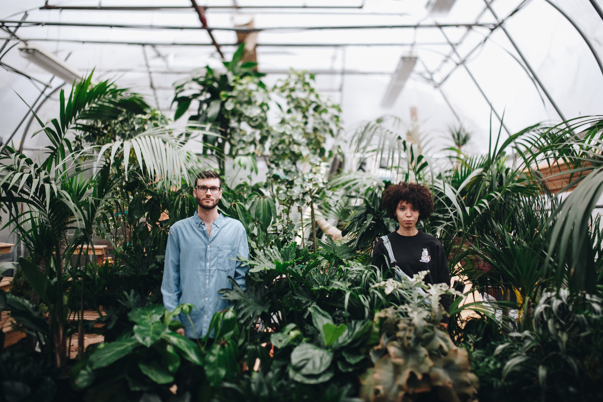

We created Plant Shop in 2020 because, quite simply, we love plants. When launching our shop, we wanted to create a space that felt warm and welcoming to all, from plant admirers to expert growers. One of our favorite parts of operating Plant Shop is sourcing the most beautiful and exotic plants that we can get our hands on, and of course sharing them with all of you.
Plant Shop started in Fort Worth, Texas and was originally operated out of a 270 square foot 1978 Airstream Sovereign, that we renovated ourselves in our backyard. In February 2021, we expanded to our brick and mortar shop located at 4800 Camp Bowie Blvd. In our shop, you'll find a carefully curated selection of both indoor and garden plants, planters, garden tools, and home goods.
You can also purchase a selection of our products online and have them shipped directly to your door. We use expedited shipping and package your plants in protective layers to ensure their safe arrival.
Plants transform your space, elevate your mood, boost your creativity and even improve your health. Whether you’re plant obsessed or a first time plant parent, we’ve got everything you need to keep your green friends happy, healthy and thriving.